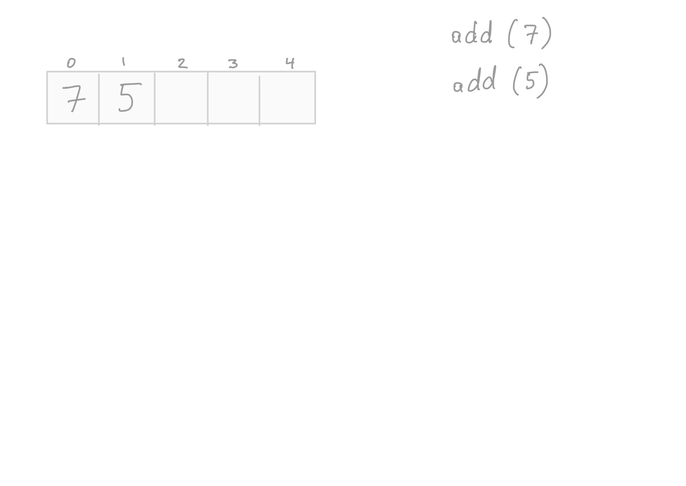
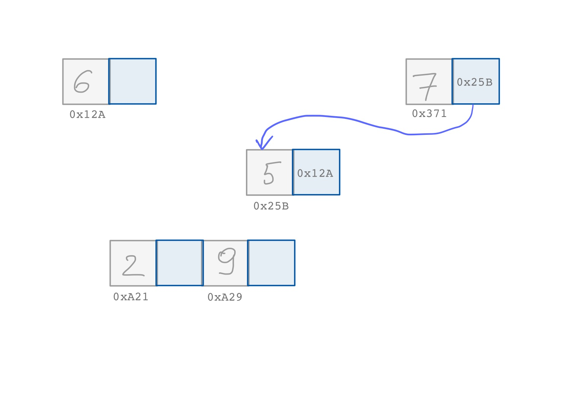

class: center, middle, title-slide # CSCI-UA 102 ## Data Structures <br> ## Data Structures and Algorithms <br>(Bird's Eye View) .author[ Instructor: Joanna Klukowska <br><br><br> ] .license[ Copyright 2020 Joanna Klukowska. Unless noted otherwise all content is released under a <br> [Creative Commons Attribution-ShareAlike 4.0 International License](https://creativecommons.org/licenses/by-sa/4.0/).<br> Background image by Stewart Weiss<br>] --- layout:true template: default name: section class: inverse, middle, center --- layout:true template: default name: breakout class: breakout, middle --- layout:true template:default name:slide class: slide .bottom-left[© Joanna Klukowska. CC-BY-SA.] --- template: section # Phone-book Search ## (as an introduction to algorithm performance analysis) --- ## Remember Phone-books? - __Raise your hand if you have ever seen a phone-book.__ -- - __Raise your hand if you have ever used a phone-book.__ -- .center[ <figure > <img width="600" alt="phonebook" src="https://upload.wikimedia.org/wikipedia/commons/d/d3/Telefonbog_ubt-1.JPG"> </img> .small[<figcaption markdown="1"> Tomasz Sienicki / [WikimediaCommons](https://commons.wikimedia.org/wiki/File:Telefonbog_ubt-1.JPG) / [CC BY](https://creativecommons.org/licenses/by/3.0) <figcaption markdown="1"> ] </figure> ] --- name:Jane-take1 ## Searching For Jane Wong (Take 1) .left-column2[ .pseudocode[ 1. open the phone-book on page one 1. if Jane Wong is on that page - get her number 1. otherwise - flip to the next page - go back to step 2 ] ] -- --- template: Jane-take1 <img alt="phonebook one page turned" src="img/03/phonebook-3.jpg" width=340px /> --- template: Jane-take1 --- template: Jane-take1 name:Jane-take1-final <img alt="phonebook one page turned" src="img/03/phonebook-5.jpg" width=340px /> --- template:Jane-take1-final You are most likely going to tell me that this is not a very good algorithm, but let's think about it for a while. -- - Is the algorithm correct? (i.e., will it find Jane Wong in the phone book?) -- __YES__ -- - Is it efficient? (i.e., is this the fastest way of doing it?) -- __NO__ -- - Assuming that there are 1,000 pages in the phone book, how many page turns will it require? -- <br>__can't know for sure, but ~800-900__ (or 1000 if Jane is not listed) -- - How about if there are 10,000 pages in the phone book? How many page turns will be needed? -- <br>__again, can't know for sure, but ~8,000-9,000__ (or 10,000 if Jane is not listed) --- template:Jane-take1-final .important[ When the number of page turns is directly proportional to the total number of pages, we are using a __linear__ algorithm to search for Jane. ] -- More generally, .important[ When the number of operations is directly proportional to the input size (generally denoted as `N`), we are using a __linear__ algorithm. This is often described as an `O(N)` algorithm. ] --- ## Searching For Jane Wong (Take 2) .pseudocode[ 1. open the phone-book on page one 1. if Jane Wong is on that page - get her number 1. otherwise - __flip two pages__ - go back to step 2 ] -- - Is the algorithm correct? (i.e., will it find Jane Wong in the phone book?) -- __NO__ -- But we can fix it taking advantage of the fact that phone books are sorted. --- ## Searching For Jane Wong (Take 2.5) .pseudocode[ 1. open the phone-book on page one 1. if Jane Wong is on that page - get her number 1. otherwise - if the current page contains names _after_ Jane Wong - __go back one page__ - go back to step two - otherwise - __flip two pages__ - go back to step 2 ] -- - Is the algorithm correct? (i.e., will it find Jane Wong in the phone book?) -- __YES__ -- - Is it efficient? (i.e., is this the fastest way of doing it?) -- <br> __NO__ (well, it is twice as fast as the _take 1_ algorithm, but we can do better) -- - The number of page turns required by this algorithm is still directly proportional to the number of pages, so it is still a __linear algorithm__. --- name:Jane-take3 ## Searching For Jane Wong (Take 3) This is the algorithm that most people would follow (well, approximately). .pseudocode[ 1. - 1. open the phone-book to the middle page {{content}} ] -- 1. if Jane Wong is on that page - get her number {{content}} -- 1. otherwise, if the page contains names _after_ Jane Wong - tear the phone book in half - throw out the second half (including the page you just looked at) - go back to step 1 {{content}} -- 1. otherwise, if the page contains names _before_ Jane Wong - tear the phone book in half - throw out the first half (including the page you just looked at) - go back to step 1 -- What is the missing first step? --- ## Searching For Jane Wong (Take 3) This is the algorithm that most people would follow (well, approximately). .pseudocode[ 1. if there is no phone-book left - Jane Wong is not listed, can't get her number 1. open the phone-book to the middle page 1. if Jane Wong is on that page - get her number 1. otherwise, if the page contains names _after_ Jane Wong - tear the phone book in half - throw out the second half (including the page you just looked at) - go back to step 1 1. otherwise, if the page contains names _before_ Jane Wong - tear the phone book in half - throw out the first half (including the page you just looked at) - go back to step 1 ] -- - Is the algorithm correct? (i.e., will it find Jane Wong in the phone book?) -- __YES__ -- - Is it efficient? (i.e., is this the fastest way of doing it?) -- __YES__ (although we won't prove it) -- - Assuming that there are 1,000 pages in the phone book, how many page turns will it require? -- <br>__at most 10__ -- - How about if there are 10,000 pages in the phone book? How many page turns will be needed? -- <br>__at most 14__ --- name:halving ## Power of Halving .left-column2[ The significant performance improvement in this algorithm comes from halving the number of pages that we need to look at after we examine each page. - in _take 1_ and _take 2.5_ the number of pages that we eliminated was 1 or 2 - in _take 3_ the number of pages that we eliminate is equal to the half of the remaining pages ] -- --- template:halving <img alt="cutting number of pages in half after each test" src="img/03/binary-16.jpg" width=380px /> <div style="margin:-200px 0 0 0"> .left-column2[ .important[ When the search space decreases by half after each comparison, the algorithm is said to be __logarithmic__. It is growing proportionately to the logarithm of the input size `N`. Such an algorithm is said to be `O(log N)`. ]] </div> --- name:compare-plots ## Comparing Performance of Algorithms --- template:compare-plots .center[ ] --- template:compare-plots .center80[.center[ <img alt="plot of N, N/2 and logN" src="img/03/logN_N-2.png" width=600px /> For a fixed value of `N=25`, the time that a logarithmic algorithm takes is much smaller than the time taken by a linear algorithm. ]] -- .center80[.center[ (This may not always be true for very small values of `N`, but it always becomes true as `N` grows.) ]] --- template:compare-plots .center80[.center[ <img alt="plot of N, N/2 and logN" src="img/03/logN_N-3.png" width=600px /> As we double the `N = 50`, the time taken by a linear algorithm doubles, but the time taken by a logarithmic algorithm barely increases. ]] <!-- template: breakout ### Group Discussion: What do you think are some applications of a binary search algorithm (take 3 in our phone-book search)? - In breakout rooms of 3-4 people discuss some applications in which the binary search algorithm might be useful. - You should come up with 2-3 different applications. Try to think outside of the proverbial box. - After 5-10 minutes, some groups will get a chance to report on what they came up with. --> --- template: section # Working with Arrays --- template: slide ## An Array as The First Data Structure An __array__ is probably the first data structure that everybody learns. --- name: array-contiguous ## Constant Access Time to Elements Recall the array image from last class (with memory addresses indicated below): .center80[.center[ ]] Because an array occupies contiguous memory locations, __the access to individual elements is instantaneous.__ -- For example, when we execute ``` System.out.println(array[3]); ``` we get the element at index `3` right away. -- It does not matter how big the array is. It also does not matter if we are trying to access an element at index `3` or at index `3000`, the access time is going to be the same. --- template: array-contiguous .important[ When an operation is independent of the number of elements in the data structure, it is said to be __constant__, which is denoted as `O(1)`. ] --- ## Searching in an Array For searching in an array, we can apply similar algorithms as for searching in a phone book: - If the data in our array is __not sorted__, then we will use a __linear search__, `O(N)`. - If the data in our array is __sorted__, then we can use a __binary search__, `O(log N)`. --- name: array-add ## Adding an Element to an Array Now, let's see how elements are added to an array. .center[ {{content}} ] --- template: array-add Start with an empty 5-element array. --- template: array-add Add 7 to it. --- template: array-add <img alt="add elements to an array" src="img/03/array_add-20.jpg" width=550px /> Add 7 to it. --- template: array-add <img alt="add elements to an array" src="img/03/array_add-21.jpg" width=550px /> Add 5 to it. --- template: array-add  Add 5 to it. --- template: array-add Add 6, 2, and 9 to the array. --- template: array-add Add 6, 2, and 9 to the array. --- template: array-add Now, let's try to add 1. --- template: array-add <img alt="add elements to an array" src="img/03/array_add-26.jpg" width=550px /> Now, let's try to add 1. Where should it go? --- template: array-add __We need a bigger array!__ -- .center[ __That means that we need to copy the 5 existing elements to the bigger array, first, <br>and then add 1 to it. __ ] --- template: array-add Copy 7 --- template: array-add Copy 5 --- template: array-add Copy 6 --- template: array-add Copy 2 --- template: array-add Copy 9 --- name: array-add-final template: array-add __Finally, add the 1!__ --- template: array-add-final <div style="margin:0 0 0 0"> .center[ .huge[Tedious, isn't it?!] ] </div> --- ## Adding an Element to an Array - The initial add operations were fast. In fact, they were performed in __constant time__. -- - But once the array is _full_ we need to do a lot of work in order to add another element: .pseudocode[ 1. create a new, larger array 1. for each element in the original array - copy it to the new array 1. add the new element to the new array ] -- This is a __linear time__ algorithm, and it may take a lot of time if the original array had many elements. -- <div style="margin:3em 0 0 0"> .center[.large[Can we do better? ]] </div> --- name: alternative ## Alternative Memory Layout What if we could put elements anywhere in memory, instead of being restricted to contiguous locations? .center[ {{content}} ] --- template: alternative But then, how do we know which element is at which _index_? <br> How do we know what comes before what? --- template: alternative We need to have a way of somehow _connecting_ the elements? -- .center[ But how can we exactly accomplish these _arrows_ that tell us where the next element is? ] --- template:alternative Remember that each value has a unique memory address (its location). --- template:alternative <img alt="add elements to an array" src="img/03/alternative-37.jpg" width=550px /> We can use additional memory (a block right next two the actual element) <br>to keep track of the location of the next element. --- template:alternative 7 is the first element (just like it was in the array). <br> 5 is the second element, so we store the address of 5, right next to the element 7. --- template:alternative Using our _arrow abstraction_ we show that the new element right <br> next to 7 points to the memory location that stores 5. --- template:alternative  Then the memory location next to 5 needs to store the memory address of 6 (our next element). --- template:alternative And we use an arrow to indicate that it points to the memory location that stores 6. --- template:alternative <img alt="add elements to an array" src="img/03/alternative-43.jpg" width=550px /> We do the same for keeping track of where 2 and 9 are located. --- template:alternative Finally, to indicate that 9 is the last element, the memory location <br>next to it is set to `0x0` (or `null`) to indicate that it does not point to anything. --- template:alternative --- template:alternative When we want to add 1 to our list of numbers, we simply place it in <br>an available memory location and ... --- template:alternative When we want to add 1 to our list of numbers, we simply place it in <br>an available memory location and ... <br>connect it to the rest of the list by adjusting stored memory addresses. --- ## Alternative Memory Layout What if we could put elements anywhere in memory, instead of being restricted to contiguous locations? .center[ .big[This means that we __do not__ need to copy all the elements <br>to a new list when we try to add 1. ] ] --- template: section # Linked List --- template: slides ## Linked List The _construct_ that we created on a previous slide is a linked list. .center[ ] -- or more often presented as .center[ ] --- ## Linked List A __linked list__ is a linear collection of data elements in which each element points to the next one. -- name: linked-list .left-column2-large[ The list is usually composed of __nodes__ that contain the actual data part and the memory address of the next element. ] ```Java class Node { int data; Node next; } ``` -- .center[ This list has six nodes. ] --- template: linked-list .center[ ] In order to work with a linked list, we need to keep track of where it starts, and, sometimes where it ends: - __`head`__ is a reference to the first node (or to the _head of the list_) - __`tail`__ is a reference to the last node (or the _tail of the list_) -- Note that `head` and `tail` are references to nodes, they are __not__ nodes themselves. --- template: linked-list .center[ ] References that do not point to anything are set to `0x0` (or zero) which is often described as __`null`__. -- .aside[ You probably have seen references to `null` value when your program crashed with a `NullPointerException`. This simply means that the program tried to access some data that does not really exist. It tried to access something through a reference whose value was `null`. ] --- template: linked-list .center[ ] As mentioned before, we will not worry about the actual memory addresses. These are stored by references in our programs and we do not need to know their actual values to understand how the data structure works. --- ## Adding to a Linked List So how do we add to a linked list? - We saw that this should not require duplicating any elements since the list is never really full. - But how many steps will it take? -- .pseudocode[ 1. Create a new node - set its value as desired - set its reference to the `next` node to `null` 1. if `tail` points to a node - set `tail.next` to the newly created node - advance tail to the newly created node otherwise (list is empty) - set `tail` and `head` to the newly created node ] -- .important[ Adding to the end of a linked list does not depend on the number of elements that are already in that list (i.e., it is independent of the length of that list). This is a __constant time__ algorithm, or `O(1)` algorithm. ] --- ## Accessing Individual Elements -- How can we access individual elements in a linked list? Can we just get to an element at position 4 or 40 immediately (as we can with an array)? -- Not really, because we do not have a reference to that element. We need to find out where in memory it is stored. Let's say we want the fourth element ( this would be index 3 in the array): -- - the memory address of that element is stored in the third node, -- - the memory address of the third node is stored in the second node, -- - the memory address of the second node is stored in the first node, -- - and the memory address of the first node is stored in the `head` reference -- __So, we need to start at the `head` reference and follow the information trail.__ .pseudocode[ Get the value of the fourth node 1. create a temporary reference called current and point it to the first node 1. initialize a counter to one 1. while counter is less than 4 - set current to current.next - increment counter by one 1. return current.data ] -- _Note that this assumes that we have at least four nodes in our list._ --- ## Searching in a Linked List -- The last thing we'll discuss about linked list for now is searching. For an array, we used: - linear search, when data was not sorted - binary search, when data was sorted What can we do for a linked list? --- template: breakout ### Group Discussion: How do we search in a linked list? - In groups of 3-4 people discuss a way of searching in a linked list. - Consider both unsorted and sorted linked lists. - Try to come up with an algorithm (like the ones on the previous slides). - After ~5 minutes, some groups will get a chance to report on what they came up with. --- ## Summary of Important Concepts Algorithmic running time - constant, `O(1)`, running time does not depend on the size of the data structure - logarithmic, `O(log N)`, running time grows proportionately to the `log` of number of elements in the data structure (usually achieved by halving) - linear, `O(N)`, running time grows proportionately to the number of elements in the data structure (usually because we need to look at all elements) -- Arrays - constant access time to elements, `O(1)` - linear time search, if unsorted, `O(N)` - logarithmic time search, if sorted, `O(log N)` - possibly linear time to add an element (when the array is full and we need to resize), `O(N)` -- Linked List - linear access time to elements, `O(N)` - linear time search, if unsorted, `O(N)` - linear time search, if sorted, `O(N)` - constant time to add an element to the end (because there is no need to resize), `O(1)` </optgroup>